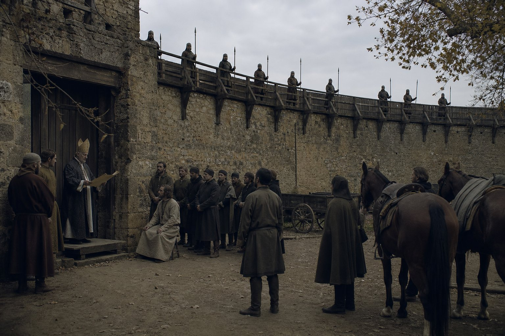
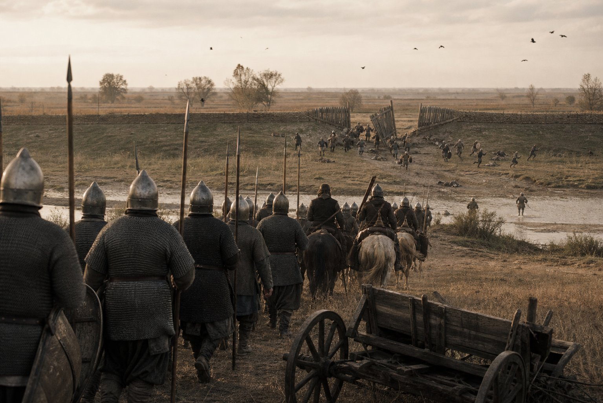
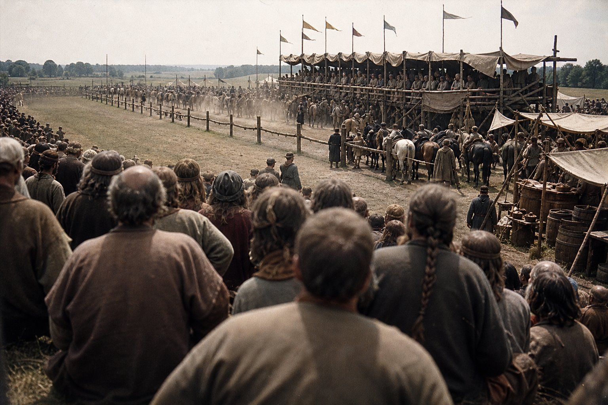
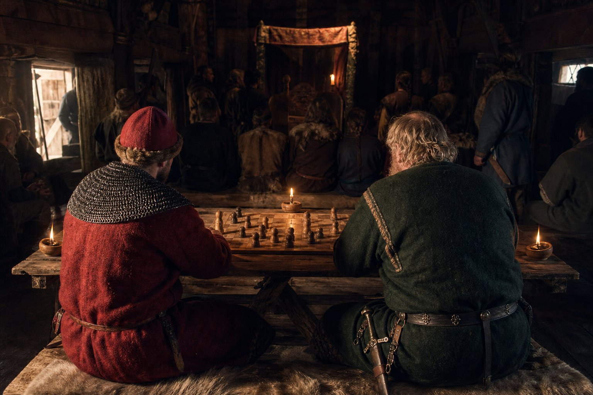
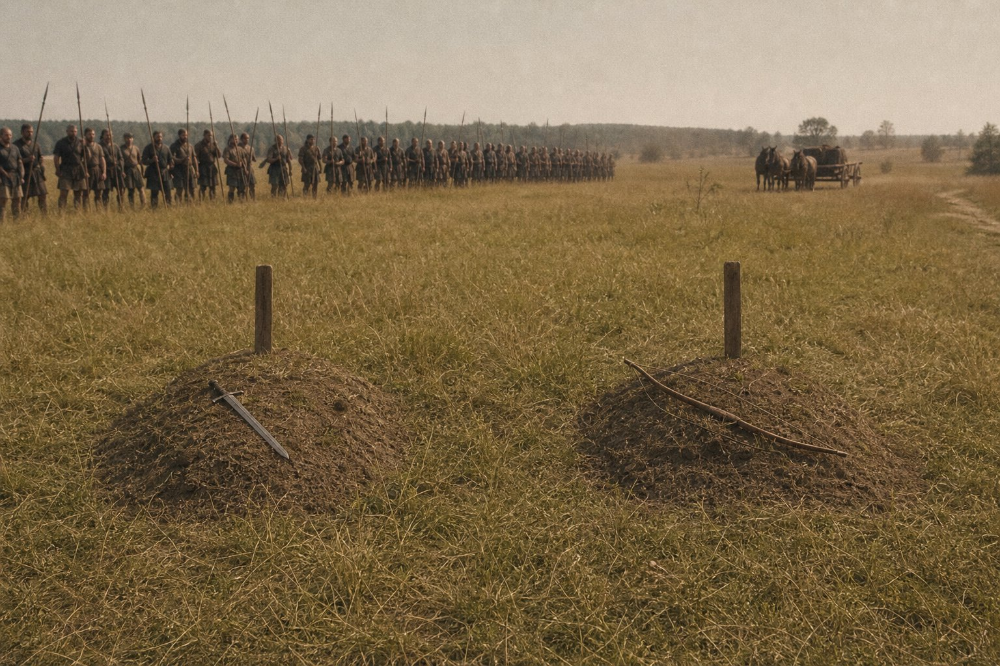
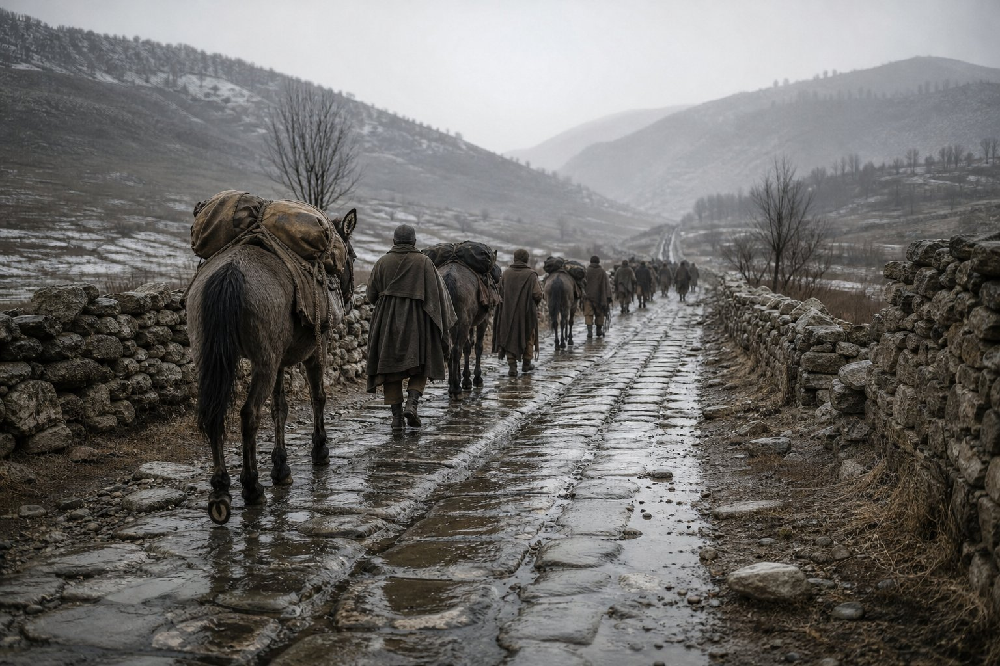
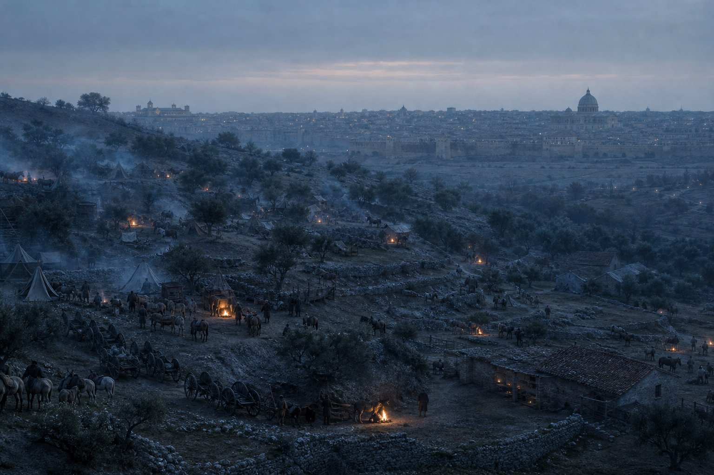
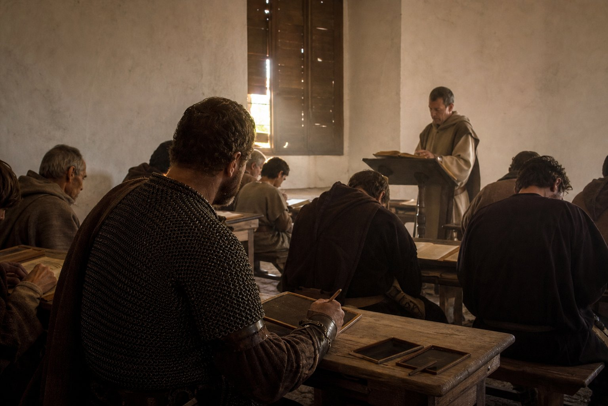
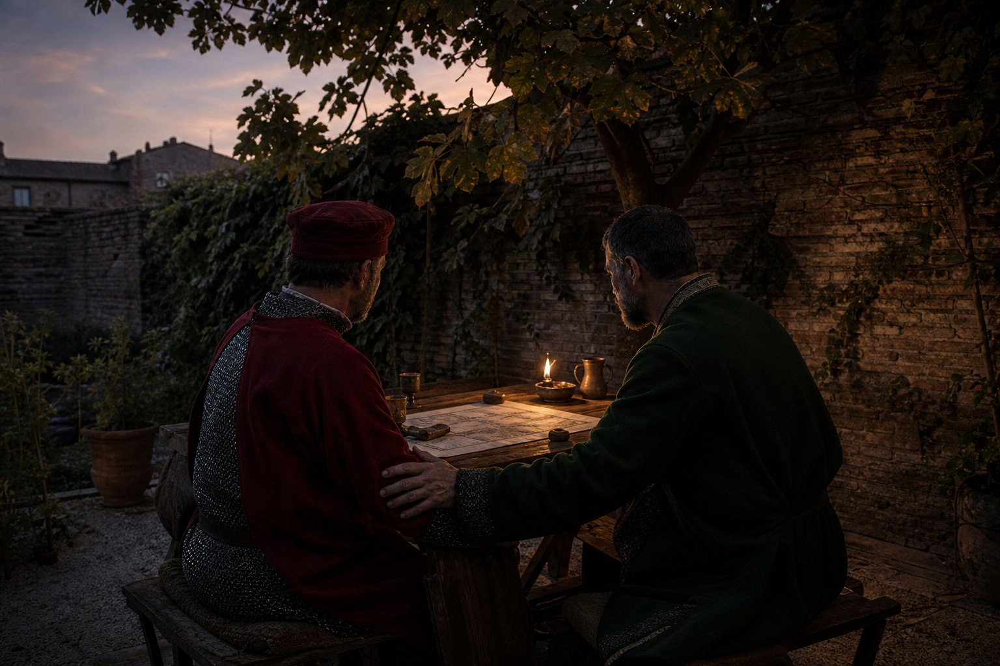
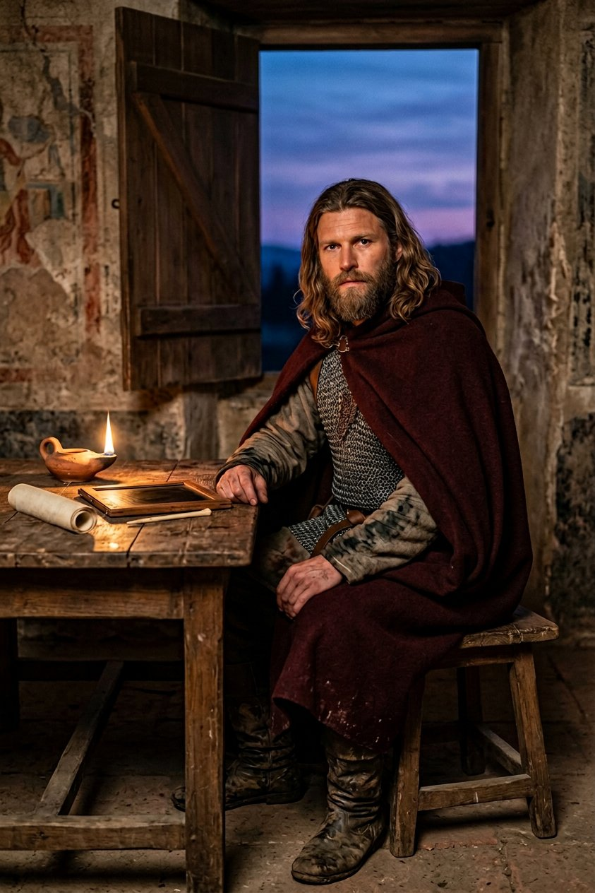

The last county he made
In the third month of 892, while a woman was in irons in a tent behind the column and a duke's debt sat uncalled in a chest, the Captain took a contract that this book has been putting off writing about for three chapters, and I am going to put it at the front of this one rather than bury it in the middle.
Kocel the Miser held Visegrad. He had held it since the twelfth month of 889, and he held it because this company had fought a holy war for him for a year and a half and won it, and because when the parchment was read out in that county the man standing in the county was Kocel.
In the third month of 892 a lord called Lampert laid claim to Visegrad, and the Captain took Lampert's contract, and the company went to war with the client it had made.
I want the reader to have the sequence straight, because it is the whole of what this chapter is about. In 888 Kocel hired us. In 889 we won him a county. In 892 he hired nobody, and we took the county off him for a man who paid better.

I asked him why, on the road, in the flat way I ask him things. I said: he was a client.
And he said: he was a client for one war. I sold him a war and the war ended, and after that he was a man with a county and no reason to pay me, and I was a company with thirty regiments and no reason to be paid by him.
And I said: and Lampert will be the same in three years.
And he said: yes.
And that, as far as I can tell, is the entire moral philosophy of the mercenary trade, stated by a man of forty-two on a horse, and there is nothing in it that is false and I have never been able to decide whether that makes it better or worse.
Lampert did not need us at first. He beat Kocel himself at Esztergom, and a lord of his called Jákob beat him again in the fourth month at a place called Csongrád, and by the summer there was nothing left of the Miser's war but the county itself and the wall around it.
I want to say a word about that name, because this book has been bitten before by a man with the same name as another man. Jákob the lord who fought at Csongrád in the fourth month of 892 is not Iacob the Wallachian who came into this company with a good horse and no letters, and who is on our roll from the same year. One is a magnate with a household and a claim; the other is a boy of twenty-five who does not write. I have checked it twice and I am putting it in a note as well, because a reader in a hundred years will not check it and will get it wrong.
We fought at Zenta by the eighth month. Ten hundred and seventy-four of ours against three hundred and seventy-seven of the Miser's, all of them lost, three of ours. It was not a battle. It was a wall being taken off a man who had run out of the money to hold it, and the company did the thing it is paid to do, and did it well, and I have never been able to read my own account of that day without wanting to apologise to somebody.
By the twelfth month Visegrad was Lampert's. There was a reading of a parchment in a hall, and two bishops, and a good many people who had come to be seen, and the company was not named in the hall, which by now we had all stopped noticing.
So that is the ledger of it, and I will set it down in one place. In four years this company made a duke at Vidin and unmade a count at Visegrad. Both times the parchment went to a man who had paid us. Both times the company came away with a fee and no county, and both times the men who read the parchment out did not say our name.

And one more contract before the year turned, because the arithmetic of a company never stops for a moral. In the twelfth month, on the seventeenth day, the Captain took a war for Luboš against Konrád over Csongrad, and gave it to two companies and a captain, and did not go himself. It was still running when this volume closes. The company has now arrived at the condition that every company of this kind arrives at sooner or later: it fights in more places than its captain can stand in.
Radom
The Grand Tournament at Radom was held in Poland from the fifth month to the tenth, under Chieftain Lech the Third, and I am going to deal with it quickly, because it was the pleasantest four months of the year 892 and the chapter has heavier things to carry.
There were two hundred tents and a great deal of mud and a market that sold amber and salt and very bad wine. The contests were the usual five. Two of ours came within sight of a prize.
Athanasios went out in the quarter-final of the board game. He is a Greek of about thirty who came into the company this year and who plays better than any officer and not nearly as well as he thinks, and he took his defeat in the way that men who play well take defeats, which is to say he explained it afterward to anybody who would stand still.
On the twenty-fourth day of the ninth month the Captain beat Lech himself in the semi-final, which is the thing that a tournament is actually for. A chieftain in his own lists, beaten in front of his own household, by a captain nobody in Poland had ever heard of, in a game of squares — the whole of that afternoon's work was worth more to this company than the melee and the races together.
On the seventh day of the tenth month he won the board game at Radom. It was his third: the Emperor's game at Kallipolis in the eighth month of 886, Lippe in the ninth month of 889, and Radom. Nobody has done that in the west in the years this book covers, and I have looked.
The melee at Radom was won by a Pomeranian company that fought it as though the prize were a county, and this company came fourth in it, which is the sort of result that never appears in a chronicle and is the whole of what a year at the lists actually consists of. The races we did better in, because Zdenka had come into this company in the first month of 890 out of a horse-dealer's family in the north, and had spent three years improving every animal we owned and had opinions about the rest.
There is one more thing about Poland that belongs in this book and not in a note. In the fifth month, before the lists opened, the Captain rode out four days from Radom with two men and looked at the country, and came back and said that it was the best country for cavalry he had seen since the steppe, and that it was a great pity that nobody in the west could be persuaded to pay for cavalry.
He was right, and it took ten years for anybody in this book to make any money out of it.
I have set that beside what happened in the seventh month because it was the same field and the same fortnight, and because a reader who has come this far is entitled to see how a company actually spends its summers: looking at ground in the morning and burying men in the afternoon.


Matako did not play at Radom. I have asked her why, twice, and she has given me two different answers and neither of them was an answer, and this book has a rule about what to do when a person will not tell you a thing, which is to say so.
The Captain gave the cup away within the month to a Polish knight who had lost well in the melee, and I asked him about that too, and he said that a cup is a thing that has to be carried, and that he had enough things to carry, and that a man who gives a cup away in public is remembered twice and a man who keeps it is remembered once.
The two falls
On the eighth day of the seventh month of 892, in camp outside Radom, Virupaksha tripped and fell to his death. He was seventy-six years old.
On the eleventh day of the same month, three days later, Chung-min the Heartless tripped and fell to his death. He was sixty.
That is the record's language, twice, in the same words, and this book is going to print the record's language and nothing else. The record does not say where either of them fell, or what they fell from, or who was with them, or whether anybody saw it. It does not say that they were killed. It does not say that they were not.
I have sat with this page for a long time across three chapters now, and I want to put down what I can and mark it, because a clerk who invents a cause is worse than a clerk who leaves a hole.
Virupaksha was the oldest man in this company and had been since about 885. He came out of the country beyond the mountains north of the Ganges, he was in the treasure hunt in the year 874 and it was his map, bought at Bint for more money than he had, and he was at Branicevo in the second month of 889 when this company fought the only even battle of its life and he was seventy-three years old and standing in the line.
Chung-min the Heartless came into this company in Korea, in the years when it was walking west along the coast with a cart and eleven men, and he had been in every one of the twelve years since, and he was a hard man with a flat face who never raised his voice and never once in twelve years asked me for money.

They were buried in the same week in the Polish country, a mile apart, because the company was on the road by the eleventh and there was no time to carry one man to the other's grave. Two graves in a summer field, one of them with a sword in it and one of them with a bow, and the whole company standing in the dust, and eleven hundred men who had eaten at those two men's fires for a decade.
The camp talked. I want that in the book because it is the truth of what happened after, and because a camp that does not talk about two deaths in three days is not a camp, it is a wall. The talk was of two old men in a hard country, and of the heat, and of the fact that the company had lost more men in the year 892 than in the two years of the Bulgar war. The talk was not, in my hearing, of anything else, and I was at every fire in that camp for a week.
That is all I am going to write about the manner of it. I have a theory. The theory is worth nothing, because I was two hundred paces away and asleep, and because the two men who could have contradicted it are in the ground. A book that prints its clerk's theory about two unexplained deaths and calls it a chronicle is a slander with footnotes.
Two of the five Greeks who came out of Constantinople in 879 are still alive and one of them is me. Evanthia, who is the eldest of us, went to the grave at the second burial and stood there for a while after the rest had gone back to the camp, and I did not go to her, because in nine years of this company I have learned the two things I am good at and one of them is knowing when a person does not want a clerk.
Yehudis examined both of them. She is the company's physician and has been with us eight years and has seen more dead men than any soldier in this book, and she wrote a line for the surgeon's book and gave it to me without a word, and the line says that there was no wound and no fever and no swelling and no mark, and that she would not sign her name to a cause.
I have kept that page. It is the only document in this history, in thirteen years of hiring out, that anybody refused to write.
Matako's page
He has left this one to me as well, and I know why, and I am not going to be grateful for it.
Virupaksha taught me to file a saw when I was twenty-nine. He was a bad teacher and he had no patience and he was the only person in this company who ever told me that my work was not good enough without wanting something from me, and I have never had another one like that and now there is nobody in the world who remembers what my work was like when it was bad.
Chung-min did not talk. In eleven years I heard him say perhaps four hundred words. He stood at the back of the forge in the winter of 883 while I set four stitches in the Captain's ribs and he did not offer to help and he did not leave, and when it was done he put a cup of water on the crate at my elbow and went out. Nobody saw him do it. I saw him do it, because I was looking at the crate.
Two men in three days is not a thing that happens. I have been in this company twelve years and I have seen seventy men killed in fields and I have never seen two men fall down dead in the same week in a camp.
And yes, I have thought about what I said to him in the winter of 881, and I am not going to write it out at length because he has read this book and he knows what I said. I said the luck was a thing he did on purpose, in the middle of the night, with the price written on the back of it. I said it as a warning to a man who was thirty and had just done something I did not like. He heard me. I know he heard me, because he stopped doing the thing I did not like.
Here is what I think now, and it is the last thing I will say about it. If the price of twelve years of luck is two old men in a Polish field, then the price was paid and the account is closed, and if it was an accident, then there is no account and no price, and I would rather there were a price, because the other thing is worse.
The road to Debar
We went south in the twelfth month, and this is a road this book has been on before, and I am going to say plainly what it was like to be on it the third time.
In the year 879 this company came west along the Via Egnatia as pilgrims, with a hundred and eighty men and a cart and a chest of gods, and the Macedonian country was a place on the way to Athens. In the year 883 we went up into its hills with twelve hundred men on our own business, past Kičevo and Debar, and it was the first time the company had ever crossed ground that its captain had a claim on by blood.
This time we came down out of the north into it in the depth of a Balkan winter with thirty regiments and a prince's fee in the chest, and we were going to Rome.
The record gives the road and only the road: Kruševac in the twelfth month, Debar in the first month of 893, Tetovo below the mountains near Skopje, and the coast at Bar in the second month. It does not say what he did on that road. I will put down two things and mark them as mine.
The first is the paved road. There is a road down that country that the Romans laid with stone blocks the size of a man's chest, and it is still there, and eight hundred years of carts have polished the middle of it into a trough, and the company walked on it for four days. A man who has marched on four empires' roads begins to notice which of them still carry traffic, and he was quiet for the whole of it in a way that had nothing to do with the weather.

The second is a village above the river, on the second evening, where an old woman came out to the carts and asked, in a dialect I could follow with difficulty and he could follow without any, whether the company was going down to the coast or up to the pass. He answered her in her own words. It was the first time in twelve years that I had heard him speak to a stranger in the language he was born into, and it lasted about a minute, and then he came back to the column and asked me for the number of the carts and it was over.
I am not going to make a sentence out of that: this book is not a book about a man's feelings about his mother's country, and he has never once in twelve years said a word to me about it. But the reader is entitled to the fact that on the fourth day of that road, at a place where the stone under his boots was laid by somebody else's empire, the Captain of this company stopped his horse, looked up a valley to the north, said nothing at all for the length of time it takes to count eleven hundred men past a point, and then rode on.
We came to Bar in the second month and took ship's passage for nobody, because a company of that size cannot be carried in ships, and went up the coast road to the south-east and then over into Italy, which took six weeks and cost more than the tournament at Radom had made.
Rome again
Rome, the second month of 893. This company first came to Rome in the second month of 882 as pilgrims with fourteen hundred men and a chest of gods and no money to speak of, and it camped in the mud below the Vatican wall like a besieging army that had lost its nerve. I have written that chapter of this book and I remember what I wrote: that a company of fourteen hundred does not go inside anything.
Eleven years later we came back, and the company did not go inside anything again, because a company of nineteen hundred still does not. It went into winter quarters in the country east of the city, four companies at a time, and it was paid to do nothing, and it was the most expensive thing the Captain did that year.
He went inside.
I want to be careful here, because this is the part of the book that a reader is most likely to imagine for himself, and what actually happened does not look much like a man in a gown. He took a room in a house near the river with four servants and a clerk, and he entered the school, and the record has his object in it in three words: study hard.
The school in Rome is not a college with a gate and a bell. It is a set of masters who take fees and teach in hired halls and in their own houses, and the men who go to it are the sons of lawyers and the sons of bishops' stewards and a good many monks, and the whole of it is in Latin, and a man of forty-three with an army is a joke in it.
He was a joke in it for about six weeks. Then he was a curiosity, and after the spring he was a student, and I know exactly how he did it, because it is the same thing he does in everything.

He got up before the others and he stayed after them and he asked questions that were stupid in a way that made the master have to think about whether they were stupid. And he did the exercises. There is no cleverness in it at all and he has no gift for languages; he speaks Greek like a Macedonian and Latin like a man carrying a heavy basket. He simply did the exercises for four months, and by the third month of 893 the masters were saying his name to each other.
On the twenty-sixth day of the third month he was praised in the school for the interpretation of a Latin manuscript, and on the twenty-third day of the fourth month again, for a harder one. I have both of those days in the record and I have never been able to get out of him what the manuscripts were, and I have asked.
On the thirteenth day of the fourth month he learned the language of one of his teachers. The record says that and no more. The teacher is not named and the language is not named and I am not going to guess at either, and I will say only that a man who has spent twelve years hiring himself to whoever paid does not need to be told why a man would want one more language, and that the Captain learned it in the way he does everything, which is badly and completely, in about five months, out of books, at an age when it is supposed to be impossible.
On the fourteenth day of the fifth month he aced an assignment, which is a school's word and not mine, and I have put it down because it is the only sentence in this entire book in which the man who broke a king's army at Brăila is described as having done his homework.

And on the same weeks, with all of that going on, two people came into this company who belong in the book for entirely different reasons.
Germano came in on the ninth day of the fourth month. He is a Lombard of about twenty-six who had been at the school for two years and had run out of money, and he came to the Captain's house with a poem he had written about the river and recited it standing up in the middle of the room, and it was well received, which in this company means that eleven men who were eating stopped eating to listen and then made him do it again.
Camilla came in on the twenty-first day of the fifth month, and I am going to give the whole of it because the record does, and because a book of this kind needs one page in it that is funny. She was a student at the school, or had been, and she came into Master Ugolino's class drunk in the middle of a lecture on a point of the law of property, and sat down in the front, and argued with him for a quarter of an hour, and was right about it, and was carried out.
The Captain was in that hall. He hired her the same week. I asked him why, and he said: because she was right, and because a woman who will be carried out of a lecture hall in Rome will ride four hundred miles for a fee without asking what the fee is.
One more man belongs in this section and he never joined this company. Arechis Dauferidi was one of the scholars at the school, a Lombard of a good family who had the manner of a man who has never been contradicted by anybody with a sword, and on the thirtieth day of the fourth month he read out an exposition of a passage of the law in front of the hall and it was very good, and Tarasiy, who was in the hall that day and who had a county to recover and no money to do it with, went and spoke to him afterward.
Nothing came of it in this book. But I have put it down because the Captain noticed it, and because he said a thing to me that evening which I did not understand for a year. He said: a man who can take a room in this city and read is worth more to a prince than a company of horse, and the princes do not know it yet, and when they find out there will be no trade left for us at all.
That is as close as this book comes to a joke about its own trade and I am leaving it in.
Now the arithmetic of the Roman winter, because this is my book and I am not going to give the reader five months of lectures without the fee.
The company was in quarters east of the city from the second month to the sixth, in four cantonments, paid by nobody, because a company in winter quarters is not paid by anybody; it is merely not losing men. Two thousand men eat whether or not there is a war. I have the figures and they are these: the winter cost this company eleven hundred gold in food and fodder and pay and the hire of the ground, against which the Captain's fees at the school, the rent of the house and the four servants came to under forty.
I wrote that comparison into the book twice and struck it out twice, because the obvious sentence — that a man spent forty gold to learn the law while his company spent eleven hundred to stand still — is not the true one. The true one is that the eleven hundred was going to be spent whether he was in Rome or in barracks at Ravenna, and the forty is the only money in the whole of those five months that bought something which would still be there in the spring.
Evanthia ran the cantonments. She has run this company's quarters in every winter since 884 and she runs them better than I could, and she came into Rome twice in six months, both times about the price of hay.
Tarasiy
On the twelfth day of the sixth month of 893, in Rome, Edouinos Silviades became friends with Tarasiy Tarasiyid, lord of Severin, and that is the end of this volume and I have known it was going to be for two years.
I have to set the history down flatly because it is eleven years long and it is the best-made thing in this book.
In the ninth month of 881 Tarasiy was at war over Severin and hired this company, and we won his war in two afternoons, at a distance, in places I have already written about. He paid. In the fifth month of 882, while this company was on a pilgrimage in Rome and singing in a wet field below the Vatican wall, Domoszló the Brute destroyed Tarasiy in two afternoons of his own and took his county off him, and there was nothing this company could do about it because it was eight hundred miles away being pious.
Tarasiy kept his head and lost everything else. He spent seven years as a lord without a county, which is the worst condition a man of that country can be in, and he did it without begging and without a war he could not pay for.
Then in the tenth month of 889 a captain of ours called Prijezda took Bereg off Domoszló in a wet field none of us ever saw, and the man who had destroyed Tarasiy was a chieftain without a war, and in the fourth month of 890 this company broke the same Domoszló's army again, and in 892 he was dead or gone and nobody in this book says which.
That is not restitution and I want to be clear that it is not. Tarasiy did not get Severin back. What he got was the knowledge that the men who took it off him had been beaten four times by a company he had hired eleven years before, and that the captain of that company was, by the spring of 893, in the same city as him, learning law.
They met in the second month, at a lecture, and did not speak. They met again in the third month, and Tarasiy, who is a proud man and had every right to be a cold one, sent a servant across the hall with a question about a passage. They met in the fourth, and the fifth.
On the twelfth day of the sixth month of 893 they were friends, which is the record's word and not mine, and I am going to put down what I saw of that evening and mark the rest.

There was a garden behind the house near the river, and a table, and four men, and a manuscript that neither of them could agree about. Tarasiy said something to him in Latin and he answered in Latin and both of them were bad at it and both of them knew it, and that was the whole of the reconciliation, if it was one.
Later, when the others had gone, Tarasiy asked him the question I had been waiting eleven years to hear somebody ask him. He asked whether the two afternoons in 881 had been worth what this company had been paid for them.
And the Captain said: no.
And Tarasiy said: then why did you take the fee?
And he said: because a captain who does not take the fee is a man with an opinion, and a man with an opinion is hired once.
That is the book's version of the conversation, and I have marked it in a note, because I was at the other end of the garden and I could not hear the half of it, and because a clerk who reconstructs a conversation he could not hear is a liar with a good ear.
What I can swear to is this. When they got up from that table, Tarasiy put his hand on the Captain's arm, which in that country is a thing men do not do, and said one word, and the word was not Latin and not Greek and I did not know it.
The count of 893, and the end of a volume
Here is what this company was at the end of the sixth month of 893, and it is the last count in this volume.
Fifty-one companions. Thirty regiments. Two thousand three hundred and forty-six men present of two thousand four hundred, which is the fullest this army has ever been and the only one of these numbers that a man can be proud of in the ordinary way. Two thousand six hundred and twenty-two gold. Twenty-nine thousand one hundred and fifty-six piety.
Four dead since Vidin: Shivamara, in a camp, of drink; Hippostrate, in a camp, of a knife nobody saw; Virupaksha and Chung-min, in a Polish summer, of a fall each.
Two prisoners: Feodosia, taken on the eleventh day of the seventh month of 891 and held ever since, and Ana, in irons since the twenty-seventh day of the same month, and I am not going to write another word about either of them on this page because the record does not, and because the next volume will have to deal with both.
One county made, one county unmade, and not one acre held.
One new word for the Captain in the record, which the men had begun to use in the spring of 891 and which the clerks had begun to write down: a trailblazer, a man who goes in front.
And this, which is the thing I have been circling since the Polish field and which I am going to put down now, at the end, where it belongs.
In the thirteen years of this book the company has buried Shivamara and Hippostrate and Virupaksha and Chung-min, and before them a Vlach called Vazul at Orșova, and a boy from Preslav called Branimir who had not yet been in the field, and a dozen men whose names are in the roll and not in this book, and two hundred more in other companies' books. Of the men who came out of the north with the Captain in 871 there are perhaps nine left. Of the five Greeks who came into this company at Constantinople in 879 there are two.
A company of this kind is not a place and it is not a family and it is not an army, whatever I have called it in these pages. It is a set of men who happen to be alive at the same time in the same trade, and every year the set is a different set, and the only thing in it that does not change is the thing in the middle of it, which is a Macedonian with a ledger and no land.
That is why the last sentence of this volume is a question about a word, and not a count.
And one friendship, made in a garden in Rome on the twelfth day of the sixth month of 893, between a Macedonian captain of forty-three with no land and a lord of Severin with no county, eleven years and eight hundred miles from the two afternoons that started it.

That is the end of the second volume of this history, and I am the man who has written it, and I am going to say the thing that a clerk is not supposed to say at the end of a book, which is that I am afraid of what comes next.
We have been in this trade thirteen years. We have made a duke and unmade a count, broken two kings' armies in one summer and lost both of the wars, buried twenty men and put two in irons, and the captain of this company has just spent five months learning the written law of the Romans in a hired hall, at his own expense, at forty-three, in Latin, badly.
There is a war coming that this company will be in the middle of, and it is not in this volume, and the record has four years of it. I know what a company that wins battles and loses wars does next, because I have watched it for thirteen years: it stops selling its sword and starts selling something else, and I have not yet found the word for what that is.
He has. He said it to me once, in the winter, and I did not write it down because I did not believe it, and now I cannot remember it exactly, and the next volume will have to get it out of him.